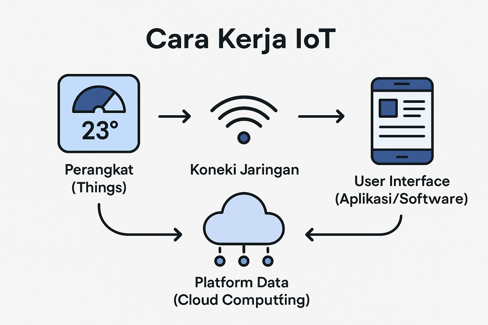

Smart home bekerja dengan menghubungkan perangkat elektronik (lampu, kunci, AC) ke internet (IoT) melalui router Wi-Fi, memungkinkan pengendalian terpusat via aplikasi smartphone atau perintah suara. Sensor mengirimkan data ke aplikasi, dan sistem melakukan otomatisasi berdasarkan jadwal atau aktivitas pengguna untuk meningkatkan keamanan dan efisiensi energi.

Kelebihan Smart Home:
Keamanan Ditingkatkan: Dilengkapi CCTV, smart lock (kunci pintar), dan alarm yang bisa dipantau secara langsung melalui smartphone.
Kenyamanan & Efisiensi: Lampu, AC, dan perangkat lain dapat diatur otomatis atau dari jarak jauh, meningkatkan kemudahan dan menghemat penggunaan energi.
Integrasi Perangkat: Berbagai perangkat rumah tangga terhubung dalam satu sistem/aplikasi, mempermudah manajemen rumah.
Aksesibilitas Tinggi: Memudahkan penghuni, terutama lansia atau disabilitas, dalam mengontrol lingkungan rumah.
Kekurangan Smart Home:
Biaya Mahal: Investasi awal untuk perangkat dan instalasi cenderung tinggi dibandingkan alat konvensional
Ketergantungan Internet: Sistem membutuhkan internet stabil; jika down, kinerja otomatisasi terganggu.
Ketergantungan Internet: Sistem membutuhkan internet stabil; jika down, kinerja otomatisasi terganggu.
Masalah Kompatibilitas: Tidak semua perangkat pintar dari merek berbeda dapat berfungsi maksimal bersama-sama